Diablo Gothic templateless
GATE PASS · 4 roll(s) · seed 110

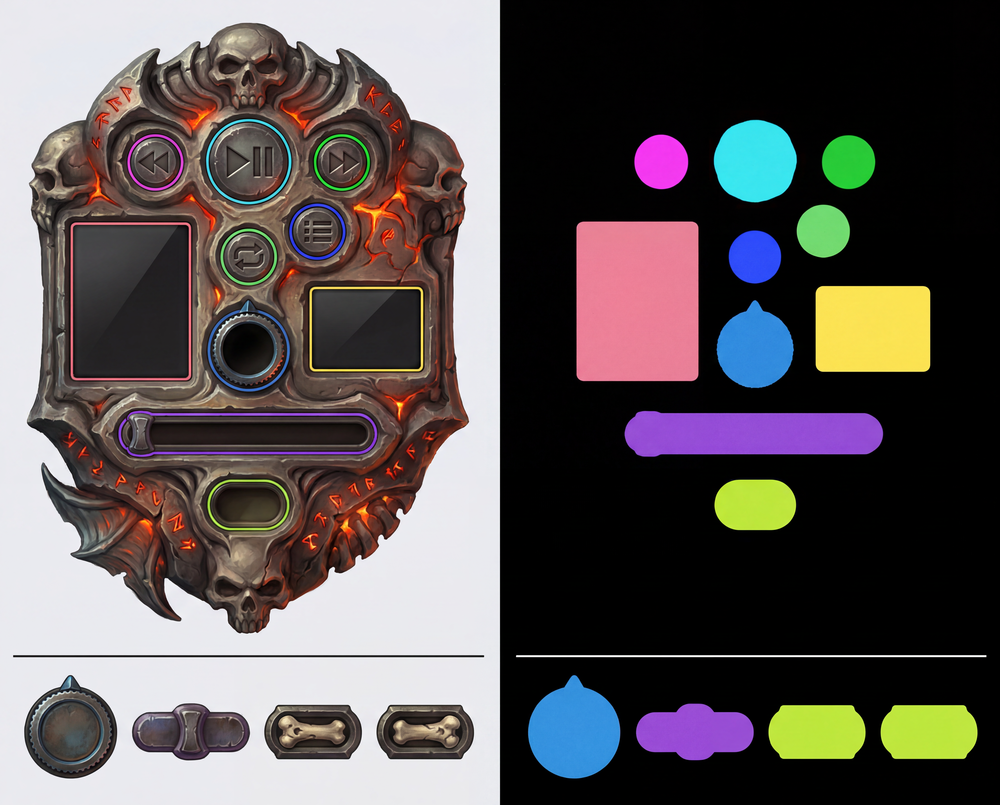


▶ LIVE
PLAYER
PLAYER
controls 10/10 · seek-cov 1.038 · empty ok · align x · leak 0.0
reasons: state-align
reasons: state-align
| skin | mode | gate | rolls | seed | controls | seek-cov | fail reasons |
|---|---|---|---|---|---|---|---|
| diablo-gothic | templateless | ✓ PASS | 4 | 110 | 10/10 | 1.038 | state-align |
| fa-pod | templated | ✓ PASS | 2 | 173 | 10/10 | 1.038 | state-align |
| fa-sky | templateless | ✓ PASS | ? | 110 | 10/10 | 1.039 | — |
| fallout-pipboy | templated | ✓ PASS | 1 | 71 | 10/10 | 1.039 | — |
| fallout-vault | templateless | ✗ FAIL | ? | 71 | ?/? | ? | — |
| myst-arcanum | templateless | ✓ PASS | 3 | 97 | 10/10 | 1.037 | — |
| n64-cutscene | templateless | ✓ PASS | 2 | 84 | 10/10 | 1.039 | — |
| n64-lowpoly | templated | ✓ PASS | 1 | 71 | 10/10 | 1.038 | — |
| ps1-crunchy | templated | ✓ PASS | 2 | 84 | 10/10 | 1.04 | — |
| ps1-wild | templateless | ✗ FAIL | 4 | 110 | 10/10 | 1.039 | emptiness |
| steam-porthole | templated | ✓ PASS | 2 | 84 | 10/10 | 1.04 | — |
| wc-goldshield | templated | ✓ PASS | 4 | 110 | 10/10 | 1.038 | — |
| wmp-quicksilver | templated | ✓ PASS | 2 | 84 | 10/10 | 1.038 | — |
| wmp-vario | templateless | ✓ PASS | 1 | 71 | 10/10 | 1.029 | — |


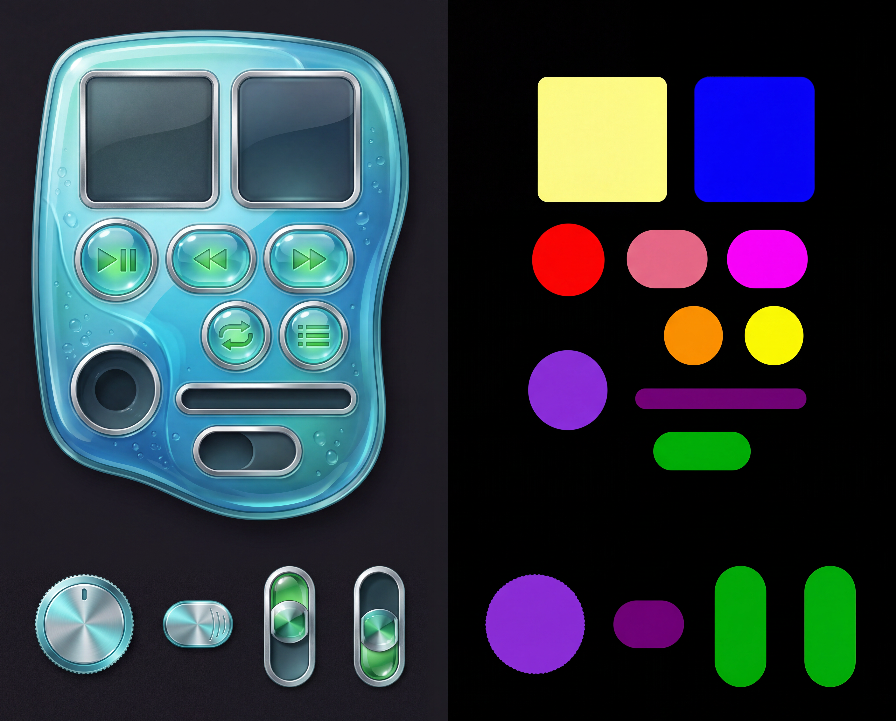


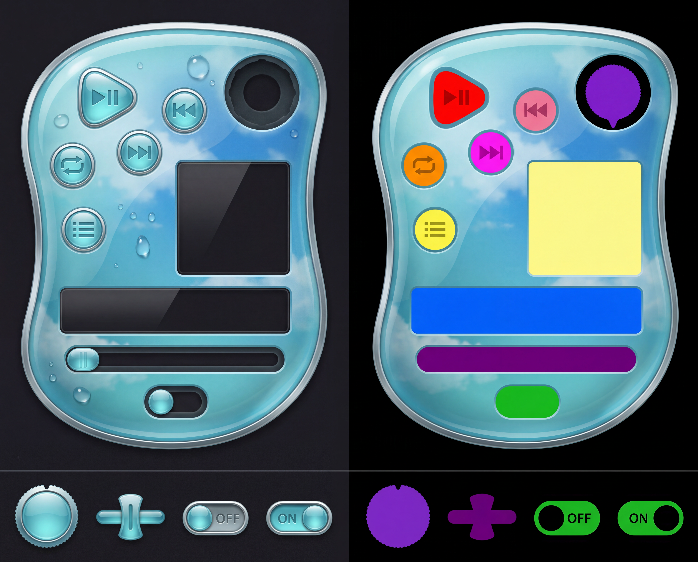


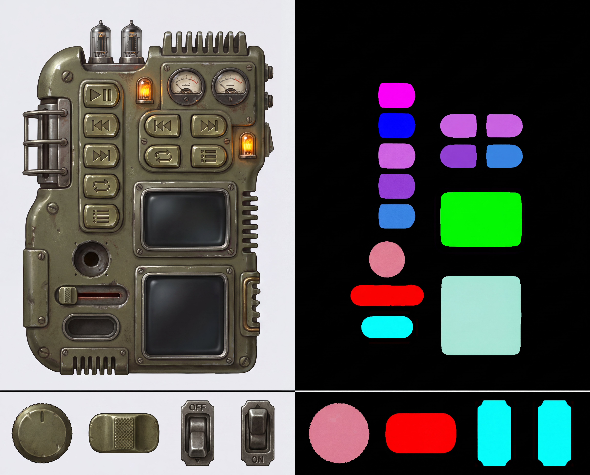


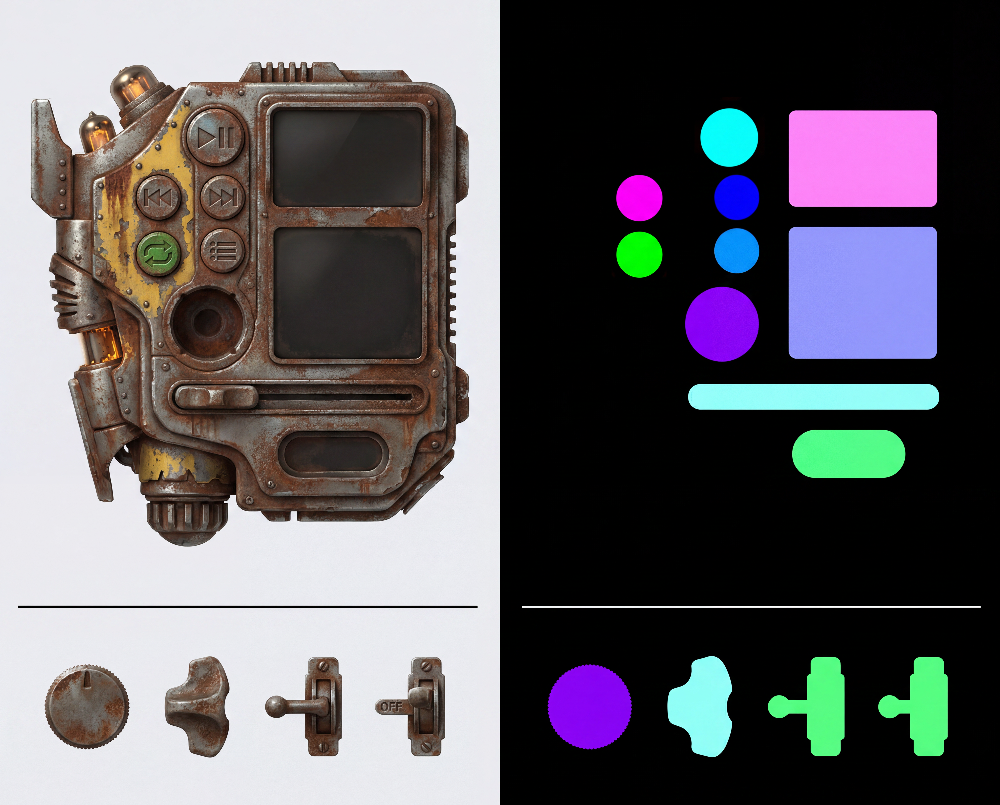


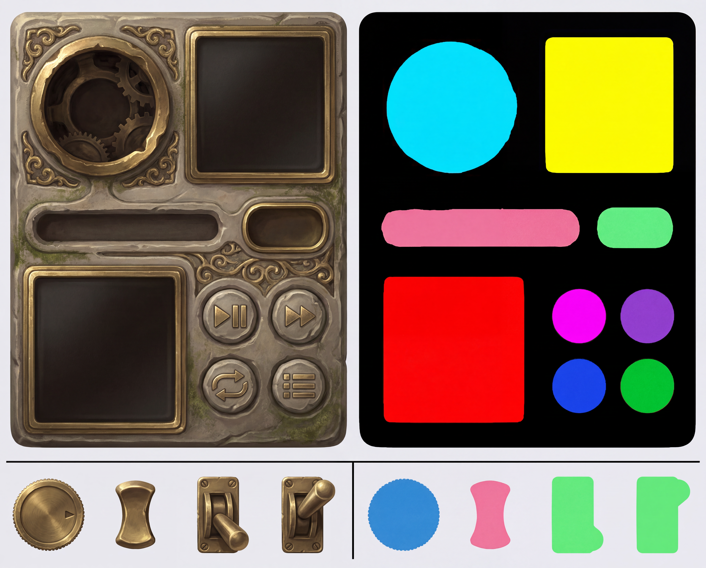


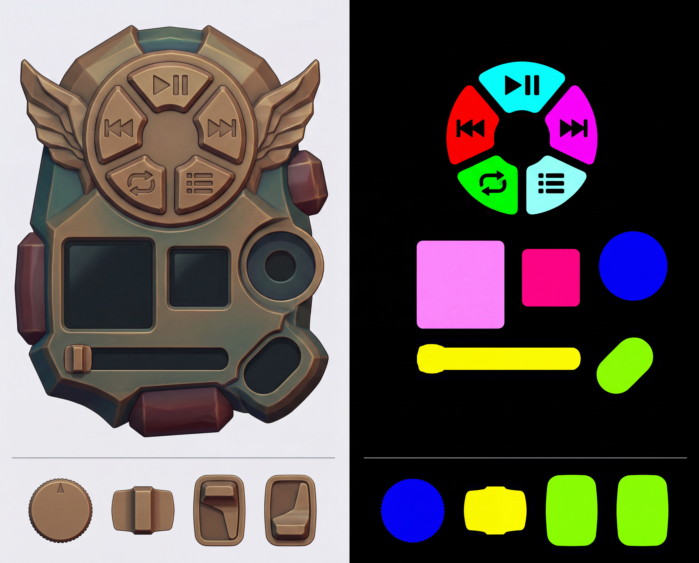


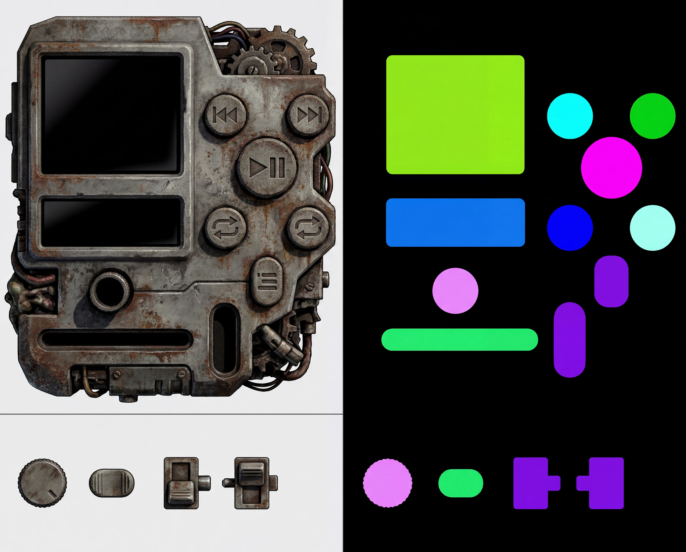


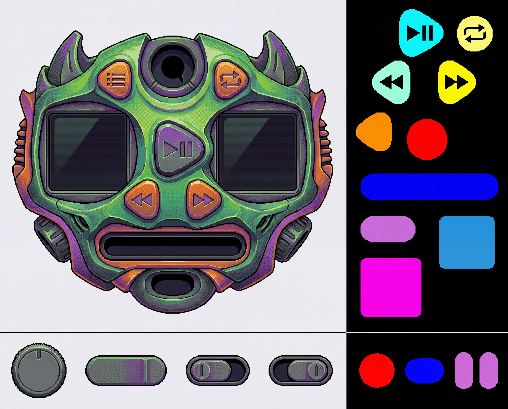


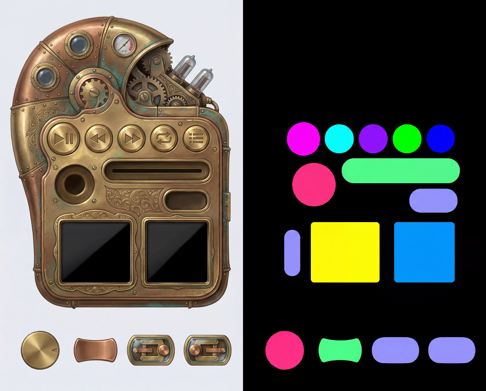


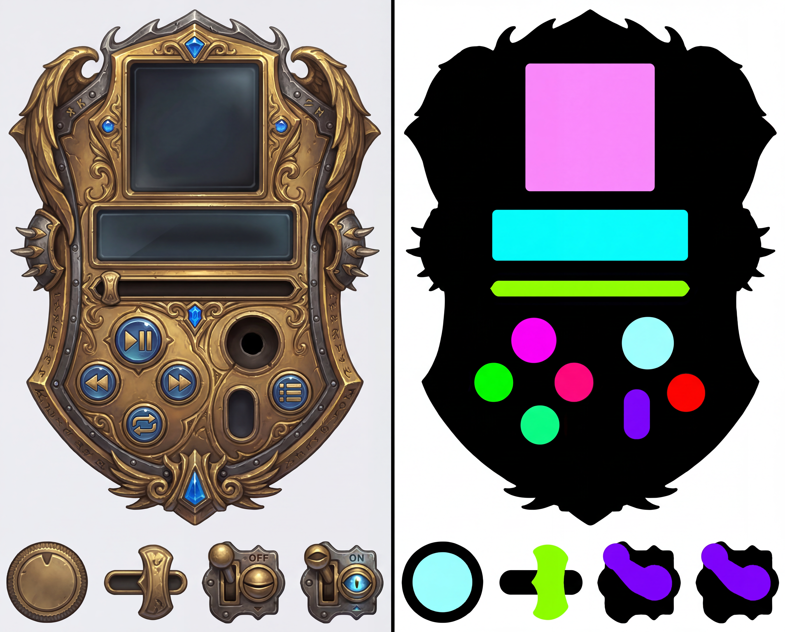


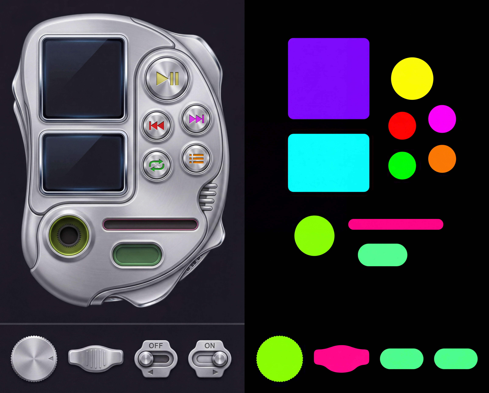


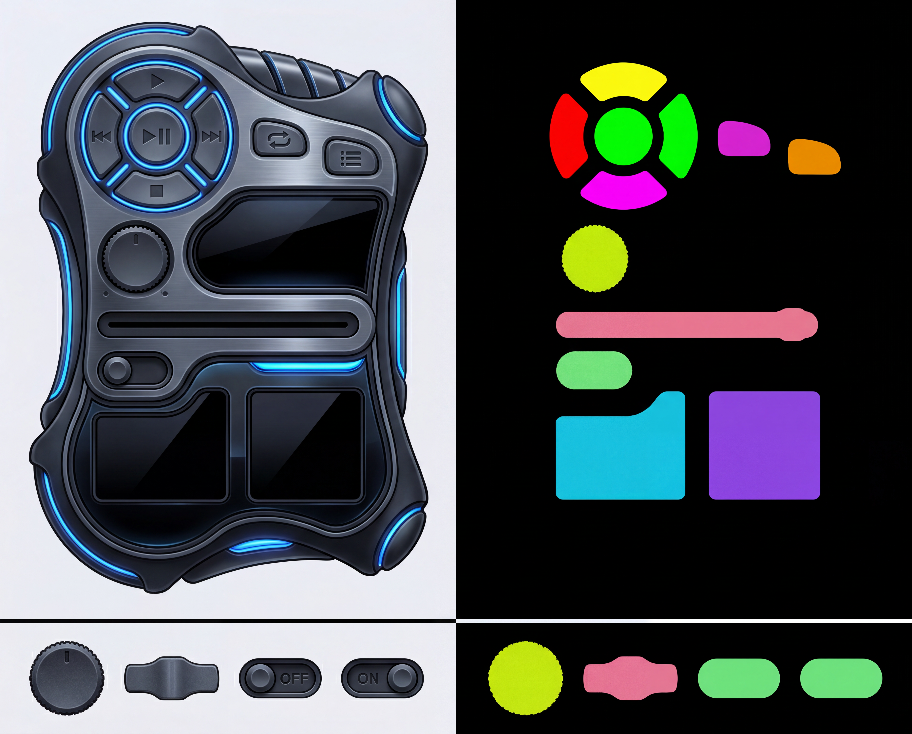


The mask bbox undershoots the painted channel, so the extractor walks the paint outward from centre through the dark recess AND its bright bezel rims, stopping only at solid body or backdrop — the thumb then covers the whole slot end-to-end.
A gradient circle-fit nails the socket radius but its centre drifts on an asymmetric specular arc. The centre is snapped to the BiRefNet matte alpha-hole centroid (geometric, no lighting bias); radius kept.
The OFF and ON cut silhouettes are registered by scale + (dx,dy) that maximise their IoU, so the housing sits at the same spot in both states — only the lever moves. Rendered box shift <1px.
A slot following an organic body is tilted. Its major-axis angle (PCA over the device-region mask pixels only — excluding strip cells) rotates the placed part to seat along the slot.
Templated locks control POSITIONS (model restyles surface + sculpts a bold outer housing). Templateless gives a blank scaffold — the model designs the whole player and the extractor recovers every control post-hoc from the returned mask.
Each skin rolls seeds through the full pipeline until the structured GATE passes (empty sockets · 10/10 controls · seek coverage · biref parts · leak) or 4 tries — auto-selecting a clean generation without human babysitting.
play/pause · prev · next · repeat · queue (baked icon buttons) · volume (knob) · seek (slider) · shuffle (2-state toggle) · album-art + visualizer (display regions). All map to Spotify Web API capabilities; the visualizer is decorative (audio-analysis is deprecated for new apps — confirm at wiring time).